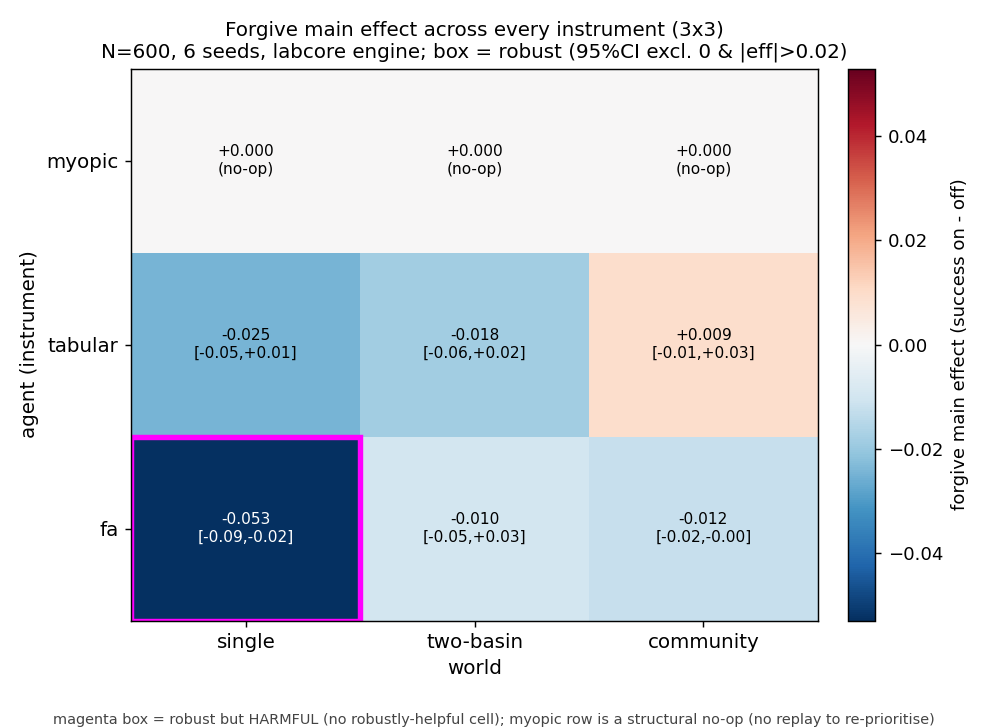

WORKGROUND · ATLAS
Atlas — Forgiveness across every instrument
One slice of the Robustness Atlas: the forgive mechanism — replay-priority demotion of the wound (the trapping transition) — main-effected across the full 3×3 grid of instruments (myopic / tabular / linear-FA) × worlds (single-basin / two-basin / emergent community). The corpus reads forgiveness as graph surgery; this asks the engine whether that surgery does anything an instrument can feel.
lab5kit over labcore (the Rust
engine), full 2⁴ factorial per cell, N=600, 6 seeds, detected basin,
seed-bootstrap 95% CI (3000 resamples). The main effect is mean(success |
forgive on) − mean(success | forgive off), averaged over all other-flag
settings. A cell is robust iff its 95% CI excludes 0
and |effect| > 0.02. lab5kit is read-only
backbone; this slice writes only its own JSON, figure, and this page.atlas/forgive.json (wall 16.2 s). The myopic agent has no
learning and no replay buffer, so a replay-priority demotion has nothing
to re-prioritise: forgive is expected to be a structural no-op
there. We verify that prediction rather than assume it.
The grid
| agent | world | effect | 95% CI | jaccard | verdict |
|---|---|---|---|---|---|
| myopic | single | +0.0000 | [+0.0000, +0.0000] | 0.500 | no-op |
| myopic | two-basin | +0.0000 | [+0.0000, +0.0000] | 0.084 | no-op |
| myopic | community | +0.0000 | [+0.0000, +0.0000] | 0.409 | no-op |
| tabular | single | −0.0246 | [−0.0542, +0.0079] | 0.500 | not robust (neg) |
| tabular | two-basin | −0.0183 | [−0.0575, +0.0217] | 0.042 | not robust (neg) |
| tabular | community | +0.0092 | [−0.0142, +0.0350] | 0.407 | not robust |
| fa | single | −0.0529 | [−0.0881, −0.0224] | 0.500 | robust — HARMFUL |
| fa | two-basin | −0.0096 | [−0.0513, +0.0272] | 0.042 | not robust (neg) |
| fa | community | −0.0120 | [−0.0208, −0.0040] | 0.367 | not robust (|eff|<0.02) |
The myopic no-op check
Confirmed, and not approximately. Across all three worlds the myopic
effect is exactly +0.0000 with a degenerate
[+0.0000, +0.0000] bootstrap interval. The myopic agent
(engine mode 2) carries no value table and no replay buffer, so
re-prioritising replay of the wound is an operation on an empty
structure. This is the expected result and it is the cleanest cell in the
grid: forgive is, for myopic, a literal structural no-op — the toggle
changes the run by zero.
Is forgive ever robustly helpful?
No. Out of nine cells: three are exact no-ops (myopic), five are not robust (CI includes 0, or |effect| below the 0.02 floor — and all five point negative or near-zero), and the single cell that is robust — linear-FA on the single-basin world, −0.053, CI [−0.088, −0.022] — is robust the wrong way: forgiveness there is reliably harmful. The fa/community cell is also entirely negative (CI [−0.021, −0.004]) but its magnitude sits just under the 0.02 robustness floor.
The pattern is consistent with the corpus's standing read and sharpens it: demoting the wound's replay priority does not help any instrument anywhere, and in the one place it clears the significance bar it actively suppresses the very transition the learner most needs to rehearse. "Forgiveness as graph surgery" is, on this engine, either operationally inert (no-op / sub-threshold) or a self-inflicted wound — never a robust benefit. Forgive is the weakest of the four atlas mechanisms by this measure: it has no robustly-positive cell at all, where vow and variety each have at least one.
See also
- lab5 — the deep-FA rung this atlas slice is run from; the instrument whose representation makes forgive's fa/single harm legible.
- Forgiveness as graph surgery — the corpus reading this slice tests: what it means, mechanically, to demote the wound, and why the engine keeps declining to be flattered by it.